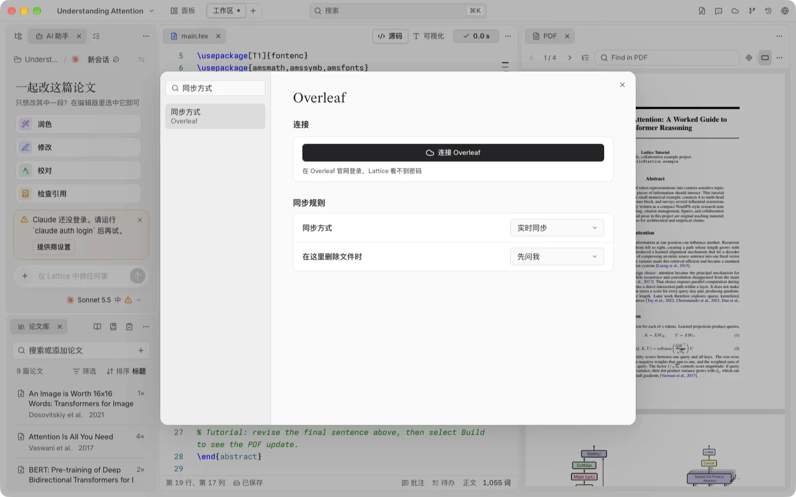

Overleaf 同步
Lattice 与 Overleaf 双向同步。合作者照常在 Overleaf 上写，不需要安装 Lattice；他们的修改、评论、聊天和修订会实时出现在 Lattice 里。
连接
打开 设置 › Overleaf，点 连接 Overleaf。登录在 Overleaf 自己的页面上完成，Lattice 不会接触你的密码。连接后，这一页会显示 已登录： 你的账号，并有 退出登录。

打开 Overleaf 项目
- 在项目菜单或 文件 菜单中选择 从 Overleaf 打开，或者点标题栏的云朵按钮（打开 Overleaf 项目）。
- 搜索你的项目，或者粘贴项目链接。别人邀请你的项目也会列出来；请先在 Overleaf 上接受邀请。显示已归档 会把已归档的项目也列出来。
- 在 下载到 中用 选择… 指定本地副本的位置（默认是
Documents/Overleaf Projects），然后点 打开，或者 在此窗口中打开，作为当前窗口的一个标签打开。
Lattice 把项目下载到一个普通文件夹，并保持关联。本地已经有关联副本的项目会注明它的位置，打开时直接同步那个副本，不再重新下载。如果下载位置已经有文件、又没有关联到 Overleaf，Lattice 会先问你：关联此文件夹 把它们关联起来，不同的文件并排保留，什么也不覆盖；下载新副本 则重新下载一份。
把本地项目放到 Overleaf
打开项目后，选择 从 Overleaf 打开，在同一个对话框里选 上传到 Overleaf，填好名称，点 上传关联 并确认。文件夹留在原处，并关联到新的 Overleaf 项目。
同步规则
在 设置 › Overleaf 中设置：
- 同步方式：实时同步 在输入时就收发修改；手动 只在你点 立即同步（在状态栏里）时同步：它会先打开 查看改动，列出将要改变的文件和每个文件的差异，点 应用 才会应用。Overleaf 上有新内容时，会显示 Overleaf 有新内容。
- 在这里删除文件时：先问我（默认）、Overleaf 上也删 或 Overleaf 上保留。无论选哪个，Overleaf 的历史里都留有副本。
- 暂停同步 停止同步，直到你点 继续同步；这一页也会显示上次同步的时间。
状态栏会显示文件是否已经到达 Overleaf：已保存并同步，或者还在路上时的 已保存，正在同步…。
两次同步之间两边都改了同一个文件时，Lattice 以上次同步的版本为基准合并两边：正文（.tex、Markdown、纯文本）按句子合并，其他文本文件按行合并。改的是不同句子时，即使在同一段里，两边的修改也都会保留。只有两人都改写过的地方才会被标出，直接标在文件里，你的文字和 Overleaf 的文字以不同底色并排显示，上面有 保留我的、保留对方的 和 保留两者；同步后会打开第一个有标记的文件并定位到那里。合并前的文字保存在 .research/overleaf-conflicts/ 下，这个文件夹不会同步。
图片等二进制文件两边都改过时，保留较新的那份，另一份另存起来。提示会说明留下的是谁的版本，可以用 用我的 或 用 Overleaf 的 换回来。
项目里每个主文档编译出的 PDF 都不会同步。源码中作为图片引用的 PDF 照常同步。
Overleaf 不接受某些文件名，例如含反斜杠或星号，或以空格开头或结尾的文件名。这样的文件留在本机，其他文件照常同步，并有一条提示说明是哪个文件、违反了哪条规则。重命名后即可同步。把含有这类文件名的项目上传到 Overleaf 时，会先请你重命名。
评论、修订建议和聊天
Overleaf 上的评论和修订建议显示在源码边栏，以及 Overleaf 面板的评论、修订和聊天中。对关联了 Overleaf 的项目，视图 › 页边审阅 设置边栏显示多少内容：自动、仅标记 或 关。